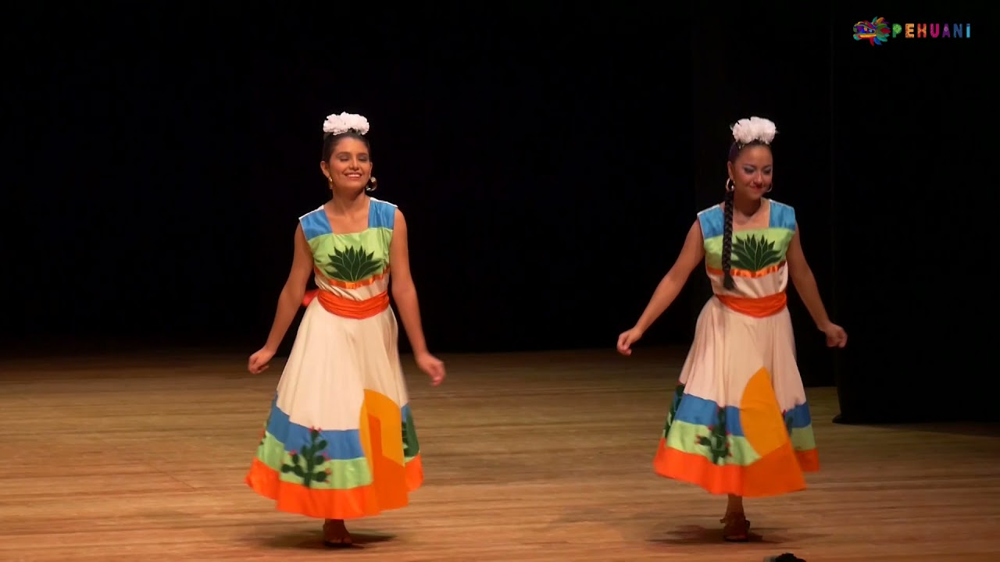

Chotis Tamaulipeco
El chotis es una danza de origen escocés (Scottish) que se popularizó en Europa durante el siglo XIX. Llegó a
México durante la época colonial y se difundió en varias regiones del país, incluyendo Tamaulipas, donde adquirió
características propias.
El Chotis Tamaulipeco refleja la influencia europea en la cultura mexicana y representa la elegancia y el
romanticismo de los bailes de salón. Es una danza social que se realiza en celebraciones y eventos
festivos.
VESTIMENTA
Hombres: Los danzantes varones suelen vestir trajes formales, con pantalones de tela, camisas blancas, chalecos,
corbatas o moños y sombreros de ala ancha. Los zapatos son de cuero y adecuados para los movimientos de baile.
Mujeres: Las mujeres visten blusas bordadas, faldas amplias y coloridas con encajes y volantes, rebozos y
zapatillas. La vestimenta es elegante y a menudo decorada con adornos tradicionales.
MÚSICA
La música del chotis es interpretada principalmente con acordeones, saxofones, guitarras y contrabajos. En
ocasiones, también se utilizan violines. Tiene un ritmo marcado y repetitivo, con un compás de 2/4 que facilita
los movimientos de los bailarines. Las melodías son alegres y animadas, invitando a la danza.
EJECUCIÓN DE LA DANZA
La coreografía del Chotis Tamaulipeco incluye pasos rítmicos y sincronizados, con movimientos suaves y
cadenciosos. Los bailarines se desplazan en un patrón de cuadrado o círculo, realizando giros y desplazamientos
laterales.
La danza se realiza en parejas, con una interacción constante y coordinada entre los bailarines. Los movimientos
enfatizan la elegancia y la gracia, y pueden incluir figuras y patrones específicos.
Los bailarines a menudo forman cuadrillas, agrupaciones de cuatro parejas que se mueven en un espacio compartido,
realizando figuras y patrones coreográficos en sincronía.
CONTEXTO CULTURAL
El Chotis Tamaulipeco se presenta en una variedad de eventos y festividades en Tamaulipas, como ferias, fiestas
patronales, celebraciones patrias y festivales culturales. Es una parte importante de las celebraciones
comunitarias y familiares.
Más allá de ser una forma de entretenimiento, la danza es una manera de preservar y transmitir las tradiciones
culturales. Participar en el chotis es una forma de conectar con la herencia local y fortalecer los lazos
comunitarios.
En resumen, el Chotis Tamaulipeco es una danza elegante y alegre que refleja la influencia europea en la cultura
tamaulipeca. Con sus movimientos suaves y cadenciosos, vestimenta tradicional y música animada, esta danza celebra
la identidad cultural de Tamaulipas y mantiene viva una parte esencial de su patrimonio.

PICOTA
La palabra ‘picota’ significa “palo alto” o “columna”, donde se exponía a la vergüenza pública a los reos al
compás marcial del tambor y clarinete. Al paso del tiempo el pueblo adoptó esta música, acoplándola a los ritmos
alegres y movidos característicos del estado mexicano de Tamaulipas. Las raíces de este baile están ligadas a los
rituales de fertilidad y es por esto que se danza “con los pies descalzos, vistiendo trajes de manta bordados con
flores”.
La Picota tiene raíces en las tradiciones indígenas de la región huasteca, influenciada por las costumbres de los
pueblos teenek (huastecos) y nahuas. Su nombre puede derivar del uso de un palo o vara, simbolizando la conexión
con la naturaleza y el entorno rural.
VESTIMENTA
Hombres: Los hombres suelen vestir pantalones de manta, camisas de algodón bordadas, fajas de colores y sombreros
de palma. También pueden llevar accesorios como pañuelos y machetes, dependiendo de la variante de la danza.
Mujeres: Las mujeres visten blusas bordadas, faldas largas y coloridas con enaguas, rebozos y flores en el
cabello. La vestimenta es tradicional y refleja la riqueza cultural de la región.
MÚSICA
La música que acompaña la Picota es interpretada principalmente con flautas, tambores, violines y, en algunas
versiones, jarana y guitarra. La flauta y el tambor son especialmente prominentes, creando un ritmo vibrante y
festivo. El ritmo es rápido y marcado, con un compás que facilita los movimientos de los bailarines. Las melodías
son alegres y repetitivas, invitando a la danza y la celebración.
DANZA
La coreografía incluye movimientos rítmicos y sincronizados, con pasos que incluyen saltos, giros y
desplazamientos laterales. Los bailarines suelen formar filas, círculos o parejas, moviéndose en patrones que
reflejan la estructura comunitaria.
Los participantes pueden formar filas o círculos, a menudo realizando movimientos en espejo o en respuesta a otros
danzantes. La danza es dinámica y puede incluir variaciones regionales en los pasos y las formaciones.
CONTEXTO CULTURAL
La Picota se presenta en diversas festividades y eventos comunitarios en la región huasteca, como ferias, fiestas
patronales, celebraciones religiosas y festivales culturales. Es una forma de honrar y preservar las tradiciones
locales.
En resumen, la Picota es una danza tradicional vibrante y significativa de la región huasteca, incluyendo
Tamaulipas. Con sus movimientos rítmicos, vestimenta colorida y música festiva, esta danza celebra la conexión con
la naturaleza, la comunidad y las tradiciones ancestrales. Es una parte integral del patrimonio cultural y una
expresión de la identidad regional.
POLKA TAMAULIPECA
Es un baile enérgico y divertido que se ha convertido en una tradición en los estados del norte de México. En este
baile, los hombres realizan un zapateado fuerte, mientras que las mujeres hacen faldeos para realzar su belleza y
coquetería.
La polka tiene sus raíces en Europa Central, particularmente en la región de Bohemia (actual República Checa).
Llegó a México en el siglo XIX y se integró en la cultura local, adoptando características propias en diferentes
regiones, incluida Tamaulipas.
VESTIMENTA
Hombres: Los bailarines varones visten trajes típicos que pueden incluir pantalones de tela, camisas blancas,
chalecos y sombreros de ala ancha. Los trajes suelen ser elegantes y decorados con elementos tradicionales.
Mujeres: Las bailarinas llevan blusas bordadas, faldas amplias y coloridas, enaguas, rebozos y zapatillas. La
vestimenta es vibrante y festiva, reflejando la riqueza cultural y la alegría de la danza.
MÚSICA
La música de la Polka Tamaulipeca es interpretada principalmente con acordeones, saxofones, guitarras y
contrabajos. En algunas ocasiones, también se pueden usar tambores y violines.
Tiene un ritmo rápido y enérgico, con un compás de 2/4 que es característico de la polka. Las melodías son alegres
y pegajosas, invitando a la danza y al movimiento.
DANZA
La coreografía de la Polka Tamaulipeca incluye movimientos rápidos y rítmicos, con pasos que combinan zapateados,
brincos y giros. Los bailarines se mueven en parejas, realizando figuras y patrones que requieren coordinación y
agilidad.
La danza se realiza en parejas, con una interacción constante y sincronizada entre los bailarines. Los movimientos
son enérgicos y dinámicos, a menudo incluyendo cambios de dirección y desplazamientos laterales.
• Círculos y Filas: Los bailarines pueden formar círculos o filas, moviéndose en patrones que reflejan la
estructura social y la cohesión comunitaria. Los cambios de formación y los movimientos en espejo son comunes en
la coreografía.
• Interacción: La danza incluye una interacción fluida entre las parejas, con movimientos que enfatizan la
conexión y la coordinación. Los giros y las figuras son parte integral de la coreografía.
En resumen, la Polka Tamaulipeca es una danza enérgica y festiva que celebra la vida comunitaria y las tradiciones
culturales de Tamaulipas. Con sus movimientos rápidos, música alegre y vestimenta colorida, esta danza es una
parte esencial del patrimonio cultural del estado y una expresión vibrante de la identidad regional.
HUAPANGO TAMAULIPECO
El huapango tamaulipeco es una [danza] tradicional mexicana originaria de la región sur del estado de
[Tamaulipas]] conocida como “La Huasteca” . Esta danza se caracteriza por su complicado zapateado al contratiempo
sobre una tarimtrío huasteco]. Está influenciada por bailes españoles como el fandango, las seguidilla y el
flamenco en general.
Este baile se ejecuta en parejas, taconeando y pespunteando según sea el ritmo de la música el cual derrocha
elegancia en la mujer y se caracteriza por ser rápido, con más ritmo, lúgubre y elegante pero ha ido evolucionando
al pasar de los años y se ha ido adaptando a los distintos contextos de nuestro país.
Este Huapango es un poco más lento que otros huapangos como los del estado de Puebla, Hidalgo y San Luis Potosí
que igualmente se bailan en una tarima.
VESTIMENTA
El vestuario del hombre consta de una bella chaqueta confeccionada en cuero y debajo de ella una camisa blanca, en
las piernas un pantalón negro y arriba de este unas chaparreras del mismo color que la chaqueta, porta un sombrero
de y en el cuello lleva un paliacate de color rojo, ya sea satinado o de tela y en la mano lleva una cuarta de
cuero.
El vestuario de la mujer consta de 2 partes: la falda y el saco, ambas tienen aplicaciones en color blanco en las
dos partes del vestuario, va acompañado de un adorno de flor que puede ser 3 de color blanco o rojo que pueden
servir como tocado en el cabello y concluye el vestuario con unos hermosos zapatos de baile de color
blanco.
MÚSICA
Para bailar el huapango se utiliza el son Huasteco la cual que es una música que trata diversas temáticas en sus
canciones y “sus orígenes datan del S.XIX en la región Huasteca tiene influencias de música española, indígenas y
africanos. Está integrado por un Trío Huasteco conformado por la guitarra, la huapanguera, la jarana y el violín”,
su principal característica es que las letras de cada una de las canciones se improvisan, generando así sones
únicos y diferentes, los temas que aborda son variados ya que puede servir para contar anécdotas, para declararle
el amor a una mujer entre otras cosas.
BAILE
VIDEO
ÉPOCA DEL AÑO
Chotis Tamaulipeco
Este baile es característico del estado de Tamaulipas, México. No está necesariamente vinculado a una época
del año específica, ya que puede ser parte de celebraciones regionales y festivales culturales que se llevan a
cabo a lo largo del año en Tamaulipas.
Picota
La Picota es una danza tradicional de Tamaulipas, México. No tiene una época del año específica en la que se
realiza, ya que puede formar parte de festivales culturales y eventos locales en cualquier momento del año.
POLKA TAMAULIPECA
La polka es una danza popular en Tamaulipas, México, y se puede realizar en diferentes momentos del año. No
está ligada a una época específica, ya que puede ser parte de celebraciones festivas y eventos culturales a lo
largo del año.
HUAPANGO TAMAULIPECO
El huapango es una danza tradicional y popular en Tamaulipas, México. Al igual que las otras danzas
mencionadas, no tiene una época del año específica en la que se realiza, ya que puede ser parte de festivales
culturales y eventos locales en cualquier momento del año.